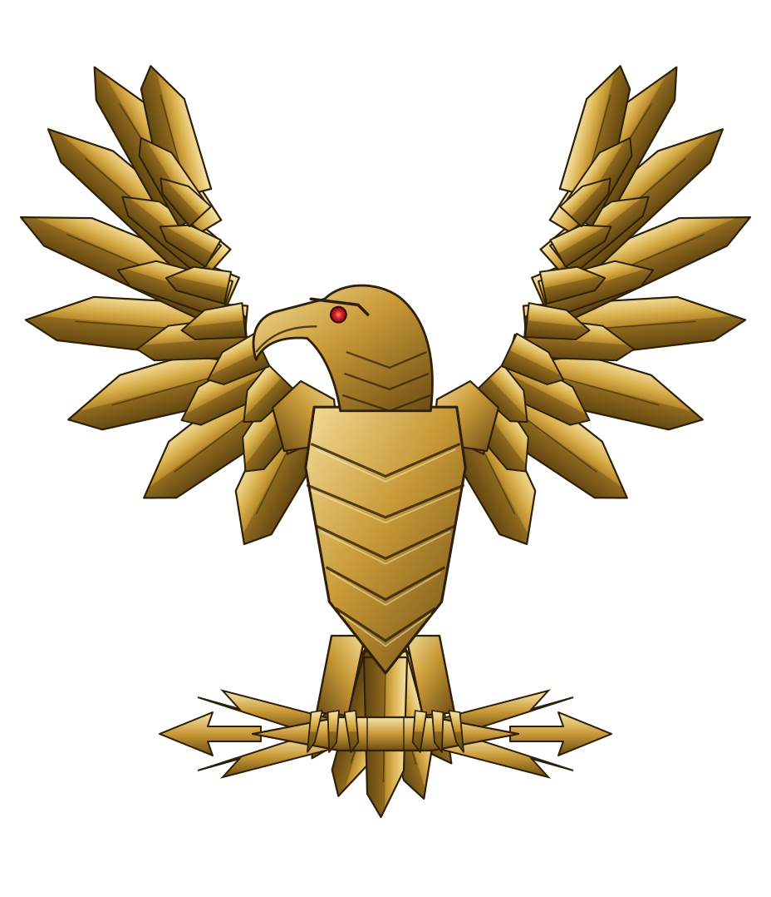
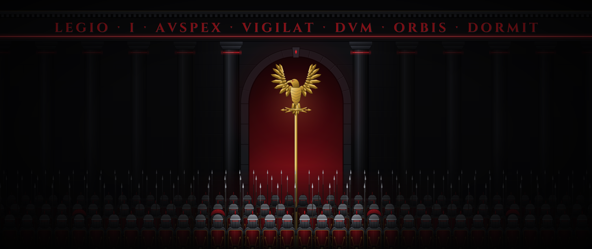
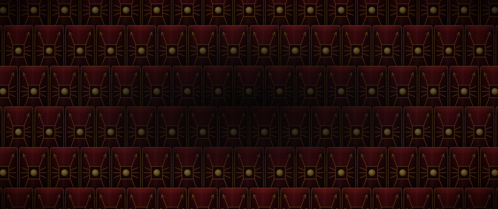

AQUILA NIGRA
Direction A (lean Roman) of the "Galactic Empire Legion" theme for auspex. Review board. Every mockup is drawn at 5120×2160 (64:27) and scaled to the page.
Name and mood
AQUILA NIGRA
- A legion stands at night parade in a hall of black alloy, and the gold eagle of the First Auspex watches over it.
- Nothing is printed: every letter is carved, red light lives only in the cuts and seams, and gold is kept for the eagle and for the thing in focus.
- It is quiet, heavy and ordered: the machine as a camp that never sleeps.
One idea holds every screen together: the screen is a temple front. The bar is the entablature with the carved line, the eagle standard stands in the arch, the ranks stand below, and the windows march in order between them. The sci-fi is only the material: black alloy in place of marble, red light in place of paint.
Palette colors.toml, Omarchy keys
The same values are in colors.toml. Three rules: gold means focus, red is light (seams, glow, and the one urgent state), and white is worn marble, never pure white. The ratio in each row is the WCAG contrast against background.
| Key | Hex | Role | Contrast on background |
|---|
Login screen SDDM

Clock and date on the left, with the date in the Roman form and the night watch as 4 bars. User and password hang on the eagle standard as its name plate (a tabula ansata). Session picker on the right: Hyprland is the new camp, Plasma the old camp. Every text color on this screen has 4.5:1 or more against the surface under it; red is never a text color here, only light. The script at the end of this file measures the worst case (see Notes).
Boot splash plymouth
Logo: the eagle. Progress indicator: a laurel wreath of 26 leaves that turn from steel to gold, 2 at a time, from the knot to the crown. The field is flat dark_background, with no gradient, so the early framebuffer shows no banding. The line under the name says AVSPICIA CAPIVNTVR ("the auspices are taken") and changes to AVSPICIA SECVNDA ("the omens are good") when boot completes.
Lock screen hyprlock

Locked means shields locked. The background is a testudo: a wall of shields with no gap. The time is in Roman numerals, with the plain time under it. The fleet counter stays on the lock screen, because the workers keep watch while the operator is away, and a red pip tells the operator from across the room that a worker waits.
Hyprland desktop bar, ghostty, Claude Code

~/repos/auspex main ❯ fastfetch
operator@auspex -------------------------------- OS auspex (Arch Linux) x86_64 WM Hyprland (Wayland) Terminal ghostty Shell bash Display 5120x2160 @ 64:27 Theme Aquila Nigra (Legio I Auspex) Font JetBrains Mono
~/repos/auspex main ❯ ls ai_docs/ design/ docs/ themes/ README.md install.sh ~/repos/auspex main ❯ git status -sb ## main...origin/main M themes/aquila-nigra/colors.toml ?? themes/aquila-nigra/wallpaper.svg ~/repos/auspex main ❯ fleet status COHORS WORKER STATE TASK I builder-1 working foundation: repo layout II builder-2 working hyprland session, side by side with plasma III reviewer-1 working review of pull request 3 IV designer-1 waiting needs the commander: pick a direction V - idle - 3 working · 1 waiting · 1 idle ~/repos/auspex main ❯
● Claude Code ~/repos/auspex
> apply the Aquila Nigra palette to the ghostty template ● I read the palette and the template first. ● Read(themes/aquila-nigra/colors.toml) └ Read 41 lines ● Update(themes/templates/ghostty.conf.tpl) └ Updated with 3 additions and 1 removal 11 background = {{ background }} 12 foreground = {{ foreground }} 13 - cursor-color = {{ foreground }} 13 + cursor-color = {{ bright_foreground }} 14 + selection-background = {{ selection }} 15 + selection-foreground = {{ bright_foreground }} 16 palette = 1={{ red }} ● Bash(auspex theme apply aquila-nigra --dry-run) └ ghostty ok hyprland ok bar ok hyprlock ok sddm skipped: needs sudo plymouth skipped: needs sudo ● The dry run is clean for the 4 user-level targets. SDDM and plymouth need sudo, so I stopped there. Do you want the 2 commands to run them?
> ? for shortcuts main · 2 files changed
Bar = entablature. Left: the eagle and the workspaces as Roman numerals (gold with a red light under it = active, marble = has windows, steel = empty). Centre: clock and Roman date. Right: the fleet counter as shield pips (gold = working, red and pulsing = waiting for the operator, hollow = idle) with the plain words beside it, then network, volume, CPU, memory, power. Windows have square corners, a 20 px gap, and no title bar; the active border runs gold to blood red, the inactive border is steel. The window ground is 76% background over a blur, so the red arch glows through but text stays clean. The terminal and agent text here is sample content.
Wallpaper wallpaper.svg, 5120×2160
File: wallpaper.svg, original vector art, viewBox 5120×2160. It uses only paths and gradients (no filters, no fonts: the inscription is outlined), so every renderer draws it the same. The carved line reads LEGIO I AVSPEX VIGILAT DVM ORBIS DORMIT: "The First Legion Auspex keeps watch while the world sleeps." The top 96 px are plain dark on purpose: the bar sits there. Two more backgrounds from the same parts:


Fonts 3 families, all SIL OFL 1.1, embedded
ABCDEFGHIJKLM
NOPQRSTUVWXYZ
0123456789 · XXI:XLVII
Wednesday 25 November
Suspend Reboot Shut down
abcdefghijklmnopqrstuvwxyz
0O 1lI {} [] () => != <=
+ accent = "#d4a843"
- accent = "#ffffff"
| Font | Use | License | Copyright line | File in this folder | System fallback |
|---|---|---|---|---|---|
| Cinzel | Display, inscriptions, numerals | SIL OFL 1.1 (text) | The Cinzel Project Authors | fonts/Cinzel.ttf (variable, 400-900) | Trajan Pro, Cormorant SC, Georgia, serif |
| Jost | Interface text | SIL OFL 1.1 (text) | The Jost Project Authors | fonts/Jost.ttf (variable, 100-900) | Futura, Century Gothic, system-ui, sans-serif |
| JetBrains Mono | Terminal and code | SIL OFL 1.1 (text) | The JetBrains Mono Project Authors | fonts/JetBrainsMono.ttf (variable, 100-800) | ui-monospace, DejaVu Sans Mono, monospace |
The 3 files are the unchanged upstream variable fonts. This page loads them with @font-face from fonts/; it makes no network request. The wallpaper needs no font at all.
Notes what is hard to build
SDDM
- The plate shape is an image. QML draws rectangles; the eared plate must be a PNG or a Shape path.
- Session names are not ours. SDDM gives "Hyprland" and "Plasma (Wayland)". The theme must map them to the 2 tiles and still show a third session.
- The Roman date is code. A small JS function in the theme makes the Kalends count and the watch bars.
- No live retint. SDDM is themed with sudo, once. A palette change does not reach it.
PLYMOUTH
- Sprites only. No vectors and no fonts: the eagle, each leaf state and both Latin lines are PNG files.
- Progress is a guess. Plymouth estimates boot time from the last boot. On a fast disk the wreath can fill in 2 seconds or jump.
- Unknown first resolution. The early framebuffer can be smaller than 5120×2160. Anchor to the centre; scale by height.
- The password prompt for an encrypted disk needs its own sprite layout and bullet drawing.
BAR · LOCK
- The fleet counter needs a data source: a script that prints the worker states as JSON, and a signal to refresh the bar.
- Pips are not text. Shield pips need a bar that draws shapes, or a glyph font, or 1 image per state.
- Cinzel is thin when small. Keep it at weight 700 and 20 px or more; Jost carries the rest.
- hyprlock draws 1 input shape: a rounded box. The Roman clock is a shell script on a timer.
SDDM
- Shape. The tabula ansata plate (rectangle with 2 ears) is not a QML primitive. Use a pre-rendered PNG with a 9-slice border, or
QtQuick.Shapes. Easy, but it is a second asset to keep in step with the palette. - Background. Qt's SVG renderer supports only a subset of SVG. Export
login-bg.svgto PNG at 5120×2160 and ship the PNG. Keep the SVG as the source. - Sessions. The picker is a
RepeateronsessionModel. Real names differ ("Plasma (Wayland)", "Plasma (X11)", "Hyprland (uwsm)"). The theme needs a name map and a plain tile for sessions it does not know. - Glow. The red light under the password slot needs
MultiEffect(Qt 6) or a pre-blurred image. The mockup uses a CSS shadow. - Fonts. Load Cinzel and Jost with
FontLoaderfrom the theme folder, or install them system-wide. The SDDM user must be able to read them. - Roman date and watch. About 30 lines of JS. Check the edge cases: Kalends, Nones, Ides, the day before each, and February.
- No retint on theme switch. SDDM lives in a system folder. A palette change needs a sudo step that renders the assets again. This is the same limit that Omarchy has.
- Test with
sddm-greeter-qt6 --test-mode --theme <dir>before a real logout. A broken QML theme falls back to the default greeter.
Plymouth
- Sprites only. The script plugin places images. It has no vector drawing and no good text. Pre-render: eagle, 13 wreath states (or 26 leaf sprites with positions), 2 Latin lines, the name.
- Progress is not linear. Plymouth guesses from the last boot time. Map progress to 13 steps and never go back a step. On a fast NVMe boot the splash can show for less than 2 seconds: the last state must look complete by itself.
- Resolution and aspect. The splash can start on a low-resolution framebuffer before the GPU driver sets the mode (NVIDIA makes this more likely). Place all sprites from the screen centre and scale by screen height. Do not place by edges.
- Flat field. Use a flat color, not a gradient: 8-bit gradients near black show bands. The mockup already follows this.
- Encrypted disk. The password prompt is a separate callback with its own sprites (slot, bullets). Not needed if the disk is not encrypted.
- Install cost. A new plymouth theme needs sudo and an initramfs rebuild. A palette change means: recolor the PNG files, then rebuild.
Taste and legal cautions
- Keep it Roman. A black, red and gold eagle can read as 20th-century fascist imagery. This design keeps the wings raised (never spread flat), keeps the thunderbolt and the Latin lines, and never puts a white disc on a red field. Hold these rules in every later asset.
- Original art. The eagle, helmets, shields and standard are drawn for this board from generator scripts. No film logo, crest, character or name is used. The helmets are closed with a red visor slit and a Roman crest: they point at the idea "trooper as legionary" and copy no film helmet.
- Latin. The lines are short and checked, but a Latin reader should confirm them before they are carved into a boot splash.
Hyprland bar and hyprlock
- Bar engine is open. Waybar (CSS, simple) can do everything here but the shield pips, which become glyphs or small images. Quickshell (QML) can draw them and animate the pulse, at the cost of more code.
- Fleet counter. Needs a script that prints
{"working":3,"waiting":1,"idle":1}and a refresh signal when a worker changes state. "Waiting" must also raise a notification (decision Q5). The bar shows nothing, not zeros, when no fleet runs. - Workspaces. Roman numerals come from a format map I to X. Beyond X, fall back to digits.
- Small Cinzel. Cinzel hairlines vanish under 20 px. Use weight 700 for numerals in the bar and Jost for all running text.
- Blur. The window ground (76% over blur) costs GPU time on a 5120×2160 screen. If games suffer, set opacity to 100%: the design still works.
- hyprlock. The input field is 1 rounded rectangle; the mockup uses that shape on purpose. The Roman time is a label with a
cmd[update:...]script. The fleet line is a second script label. - Other aspects. The wallpaper is composed for 64:27. A 16:9 screen needs a centre crop (the arch and 3 columns each side survive). The generator can also render a 16:9 version.
- Plasma fallback. Plasma gets the color scheme, the wallpaper and the fonts. It does not get the bar or the tiling look.
Directions considered
- Temple front (chosen). Screen = facade: bar as entablature, eagle standard in the arch, ranks below.
- The standard alone. Flat black, 1 gold eagle, nothing else. The simplest. Kept for boot and as the fallback.
- Marble by day. Breaks "black": white marble with red and gold inlay, a light theme. The boldest idea; not chosen because the operator asked for black.
- Camp plan. Borrowed from Roman surveyors: the desktop as a castrum grid, workspaces as gates.
- Inscription only. No figures: walls of carved text. Kept in part (the carved line, Roman numerals).
- Triumph frieze. A relief strip of marching troopers as the bar.
Kill test
- Put
wallpaper.svgand the login mockup full screen on the real monitor (use "Open alone" and F11). Work 1 evening with 2 tiled windows in front of it. - Kill or strip if: the ranks pull the eye from the terminal; the red reads as an alarm and not as light; the login cannot be read in 1 glance from 1 m.
- Fallback: remove the ranks. The hall, arch and eagle stand without them (this is direction 2).
- Confidence: medium. The art renders and scales. The open question is taste: figures or insignia only.